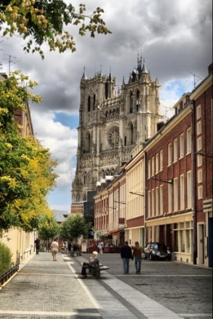
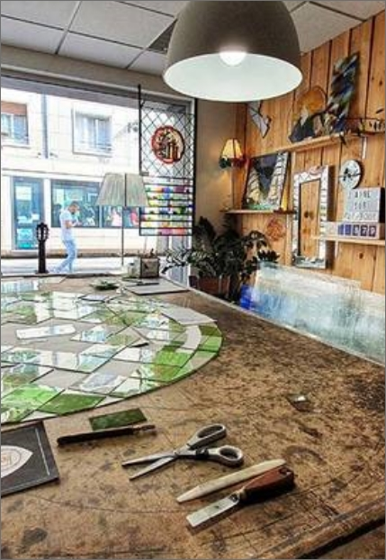
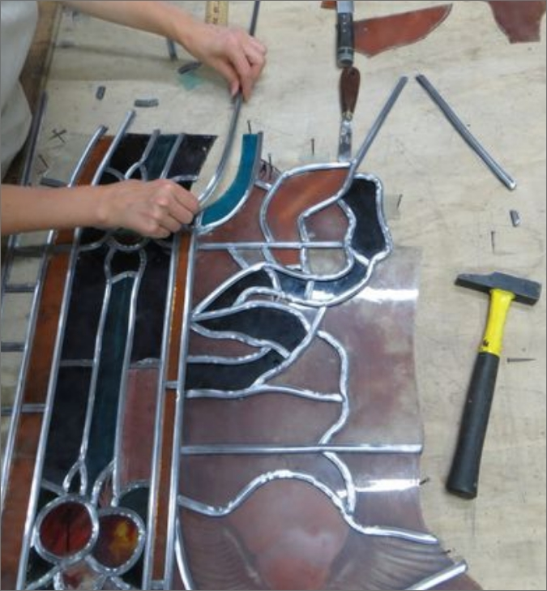

Notre atelier “Compagnon du vitrail” a vu le jour en 1986 dans les locaux d’une ancienne imprimerie. Il se situe au 35 Rue des Jacobins en plein cœur d’Amiens à deux pas de la cathédrale. L’atelier propose un large éventail de matières et de finitions: verres soufflés, étirés, imprimés, montage au plomb, fusing, thermoformage, sablage, tiffany, peinture à la grisaille, aux émaux et jaunes d’argent, création à l’aérographe, gravure à l'acide et au diamant. Nous mettons nos services à votre disposition et nous dispensons également des cours d’initiation pour adultes ou enfants, pour plus de renseignements n'hésitez pas à prendre contact via le formulaire.

La technique de vitrail traditionnel au plomb :
Cette méthode se réalise en 5 étapes :
1. Création de la maquette (esquisse colorée très précise qui révèle la future apparence du vitrail et indique le tracé des plombs. Elle fait fonction de référence tout au long de l'élaboration du vitrail)
2. Coupe du verre (le gabarit de la pièce est posé sur le verre et est reproduit fidèlement puis découpé)
3. Décoration des pièces (utilisation des deux techniques de peinture qui adhèrent au verre suite à la cuisson : la grisaille ou les émaux)
4. Mise au plomb ( Le sertissage ou encore montage, consiste à assembler les pièces de verre en les encastrant dans des baguettes de plomb)
5. Masticage ( sert à consolider les soudures terminées, pour cela un mastic semi-liquide est appliqué afin de combler les petits espaces entre le verre et le plomb)
